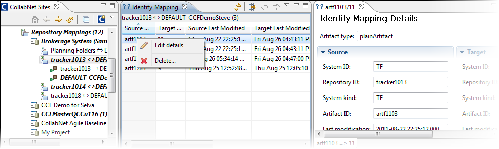

Entries in the identity mapping table are generated as the connector synchronizes artifacts in the participating systems. Under normal operating conditions you may only need to view identity mappings. Sometimes, however, you may need to delete or modify a mapping.
For example, let's say you accidentally deleted an artifact in one system. When you modify the corresponding artifact in the other system,
the connector will try to update a non-existing artifact and probably cause an error. You could delete the identity mapping, in which case a new artifact will be created instead. Instead, if you modify the identity mapping to point to another target artifact, that artifact will receive the changes from then on.
-
In the CollabNet Sites view, right-click a repository mapping or specific mapping direction and select Show Identity Mappings.

-
In the table, each row represents a map between a source artifact and the corresponding target artifact. Double-click a row to view details.
-
To narrow down your list of entries, click the Filters icon. You can choose from a variety of filters such as exception details and participating system attributes.
-
To add or remove Identity Mapping table columns, click the View Menu icon and then Columns. In the Preferences window, select the columns you want displayed.
-
To modify a mapping, right-click a table row, select Edit Details and make your changes.
-
To remove a mapping, right-click a table row and select Delete.